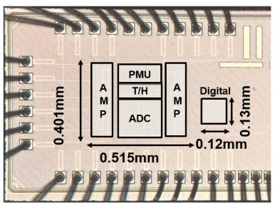
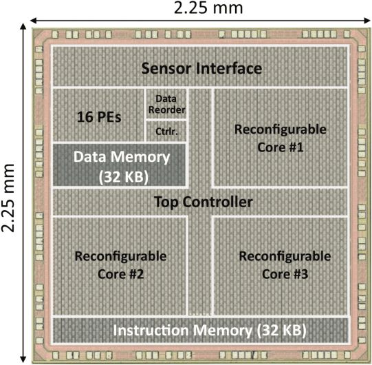
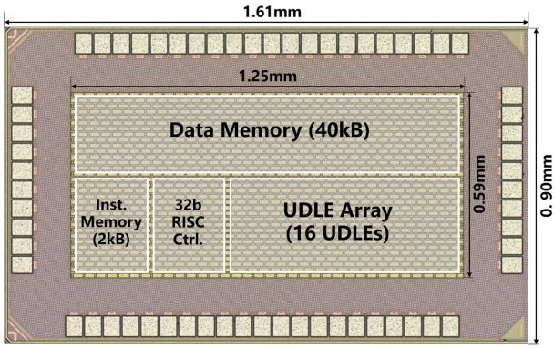
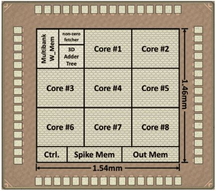
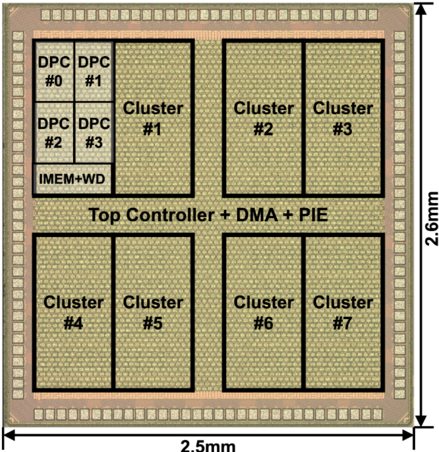
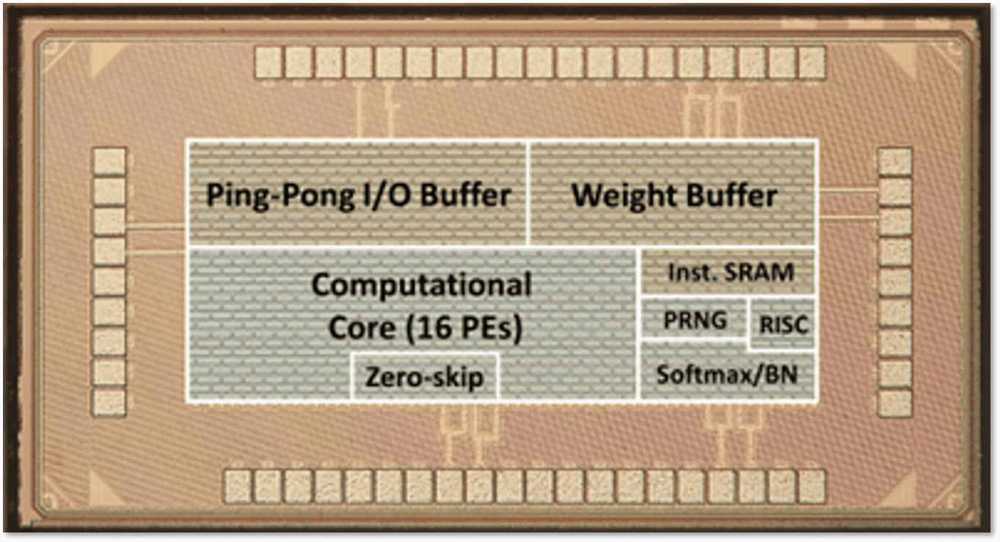
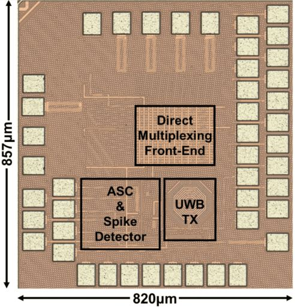
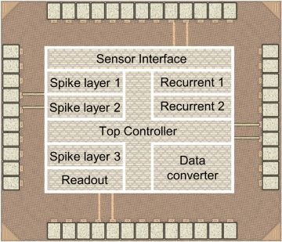
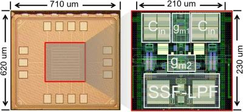
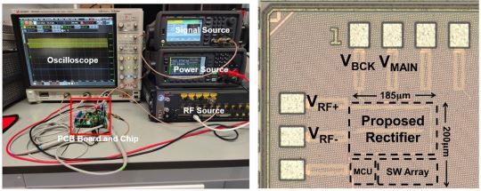
TCAS-II: An On-Chip Reconfigurable Front-End for Ultra-Low-Power RF Energy Harvesting
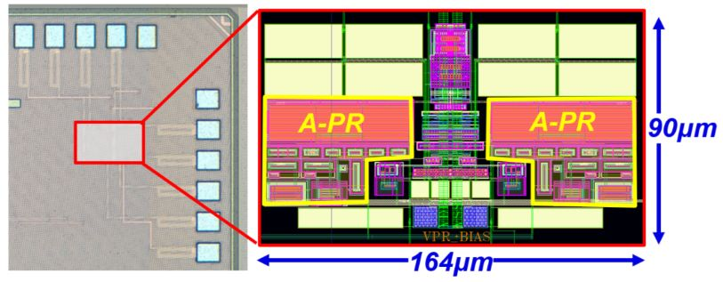

TCSVT: A Heterogeneous Parallel Processor for High-Speed Vision Chip & A High Speed Programmable Vision Chip for Real-Time Object Detection
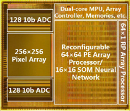
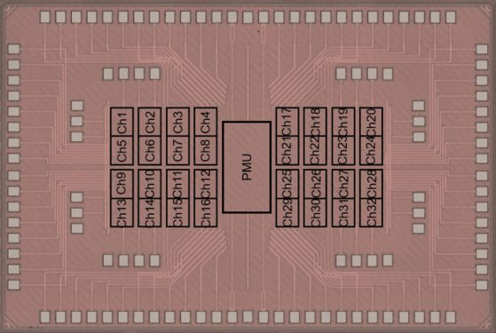
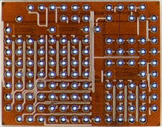